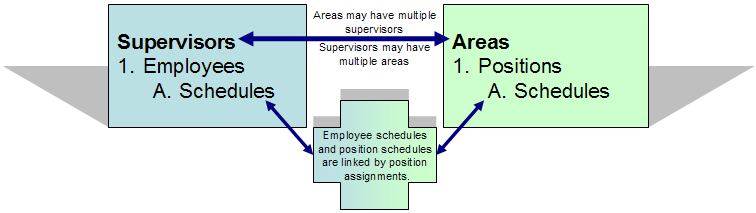

Editing Areas and Positions
Areas provide supervisors with a way of grouping and organizing positions. A supervisor may be assigned to multiple areas and each area may have multiple positions.
Depending on your organization you may only need one area for all of your positions, or it may make more sense for you to divide your positions up into multiple areas.

To create an "Area" click on the Areas & Positions link on the left-hand menu bar. If you have already defined areas a list of those
areas will appear in the middle section of the page along with their positions listed directly beneath them in a hierarchical fashion. If you do not have any areas defined, then you
will be prompted to create one. Select the "Add New Area" link to create a new area.
To edit an area, select the "Edit" link to the right of the area's name. When adding or editing an area, you are required to fill in a name for the area. A description of the area is optional.
If you would like other supervisors to be able to work with this area, then select their name from the supervisors list. You may select multple supervisors by holding down the "Control" key while
clicking on a name. You can also assign an area to a different supervisor, by selecting their name from the list and unselecting your name from the list.
To delete an area or position, select the "delete" link to the right of its name. To view the schedules for all of the positions in an area select the "view schedule" link to the right of the area name.
Positions are the tasks or jobs that employees are assigned to. Each area may have an unlimited number of positions. To add a position to an area, select the "add position" link to the right
of the area's name. Every position must have a name. The description is optional, and can be used to describe the type of work that is generally performed by this position. You can move
positions to different areas by selecting the area name from the drop down list.
After you have created your positions, you then need to create schedules for those positions. To create a schedule select the "schedule"
link to the right of the position's name. See the Position Schedules Help Topic for more information about creating and editing position schedules.